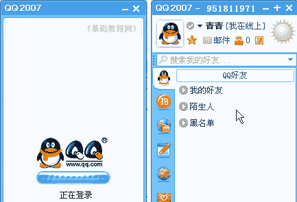

QQ聊天操作基础
七、传送文件 返回目录
QQ除了聊天以外，还可以互相发送文件，这样即使两人离得很远，也可以很方便的把文件传送过去，下面我们来看一个练习；
1、登录QQ
1）双击桌面的QQ图标运行程序，出来一个登录面板，如果自动运行就不用点桌面图标了；

2）按照从上到下的顺序，输入自己的QQ号，这个比较安全些；

3）下面的自动登录和隐身登录可以先不勾，点击“登录”按钮，登录成功以后就可以显示出QQ面板来；

2、传送文件
1）在面板中找到好友，双击打开聊天窗口，在面板的上边有一排按钮，中间有个箭头的就是传送文件按钮；
2）点击“传送文件”按钮，在出来的菜单里选“直接发送”命令；
3）接下来出来一个打开对话框，在自己的机子里找到要发送的文件，选中后点击打开按钮；
4）接下来在右边的侧边栏里出现一个发送进度条，等待对方接收，而在对方的侧边栏也出来一个接收文件的提示；
5）对方同意后，就开始发送，进度条不断前进，然后出来一个“发送完毕”的提示，
在对方的面板中，出来一个接收成功的提示，可以选择“打开”或者打开文件存放的文件夹，注意来历不明的文件不要接收，也不要打开；
本节学习了发送和接收文件的基本方法，如果你成功地完成了练习，请继续学习下一课内容；
本教程由86团学校TeliuTe制作|著作权所有
基础教程网：http://teliute.org/
美丽的校园……
转载和引用本站内容，请保留作者和本站链接。